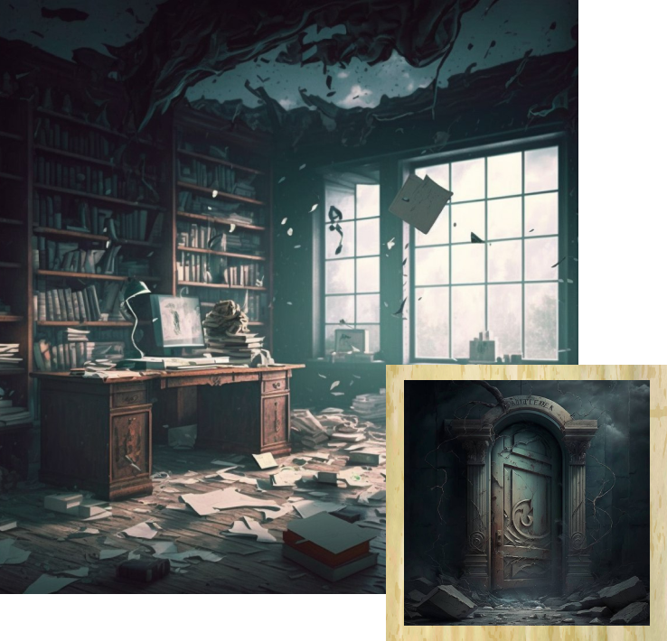

На рассвете Назар с Счетиком на плече отправились в Столицу, где творился хаос. Освещенные солнцем руины смотрелись жутко. Они служили памятником былому величию Неверленда.
Среди развалин герой обнаружил здание, которое было не так разрушено по сравнению с другими. У арки на стене висела заржавевшая табличка с надписью «Счетная палата Неверленда».
— Неужели это та самая Счетная палата, которая существовала в далеком 2023 году? — проговорил Назар, подойдя ближе. Счетик подлетел к табличке, — Поразительно, что осталось от такого величественного места.
Юноша вошел в арку, несколько минут блуждая по заброшенному месту. Внутри все было разбросано, а ценности-разграблены шайкой Пинхаса. Но вот Назар нашел единственный уцелевший уголок - кабинет, который, судя по табличке на двери, служил архивом записей.
— Здесь-то я и найду всю важную информацию и смогу понять, что происходило на самом деле, — хлопнул в ладоши герой и вместе со Счетиком стал внимательно изучать документы.
Назару попались доклады об исполнении федерального бюджета в 2023 году и ранее. Спустя долгое время, прочитав документы, он произнес:
— Получается, у государства был федеральный бюджет!
Счетик недоуменно взглянул на друга. Тот спохватился:
— Ну то есть план, где записываются расходы и доходы, рассчитывается дефицит или профицит, составляется инфляционный прогноз. Взгляни, тут написано, что на стадии разработки, утверждения и исполнения участвовали Правительство, Госдума и Президент. А Счетная палата, где мы сейчас находимся, контролировала весь процесс и проводила экспертизу, то есть аудит федерального бюджета.
Выдохнув, Назар продолжил:
— Проверка бюджетной отчетности происходила поэтапно:
Предварительный аудит (оценка проекта бюджета)
Оперативный анализ (целесообразность закладываемых средств)
Последующий контроль (исполнение бюджета)
— Четкая структура, а, Счетик? Как результат, Палата представляла оперативный анализ с ключевыми выводами. Эти данные позволяли государственному аппарату изучить макроэкономические показатели и определить, что делать дальше. А Счетная палата следила за своевременным поступлением доходов не только в федеральный бюджет, но и в Федеральный фонд обязательного медицинского страхования, Социальный фонд и выявляла нарушения. Ну и предлагала способы их устранить, конечно!
Назар замолчал, задумчиво почесав затылок. А затем продолжил рассказ: — Я так понимаю, главной функцией на этапе аудита федерального бюджета было дать независимую и объективную информацию о бюджетных процессах страны. Но кстати, Палата не только контролировала бюджетные средства. В другом документе написаны другие ее задачи. Подожди-ка, давай я лучше зачитаю. Парень схватил пожелтевшую бумагу с совсем тусклым текстом. Ему понадобилось некоторое время, чтобы суметь прочитать написанное:
— Вот если разделить работу Счетной палаты на два вида, то получится контрольная деятельность и аналитика, они распространяются на различные отрасли. Чтобы достичь полноценных результатов по проверкам эксперты использовали тематический аудит. Он состоял из разного рода аудита, подходящего для определенного объекта исследования. Здесь сказано, что аудит соответствия был основным инструментом тематического аудита. Он сочетал в себе элементы финансового аудита и аудита эффективности. При этом аудит соответствия являлся независимой оценкой соответствия предмета проверки действующим требованиям.
— А есть что-то, что не подвластно Счетной палате? — задумался Назар. И тут он увидел цветной бюллетень с ярким красным заголовком:
Что НЕ делает Счётная палата!
государственных органов;
Назар остался под впечатлением от прочитанной информации. Если бы аудит существовал по сей день, Пинхас и его дружки ни за что бы не смогли довести Неверленд до такого состояния! Юноша собрал ценные бумаги в рюкзак, свистнул Счетику и вышел из обветшалого здания Палаты.